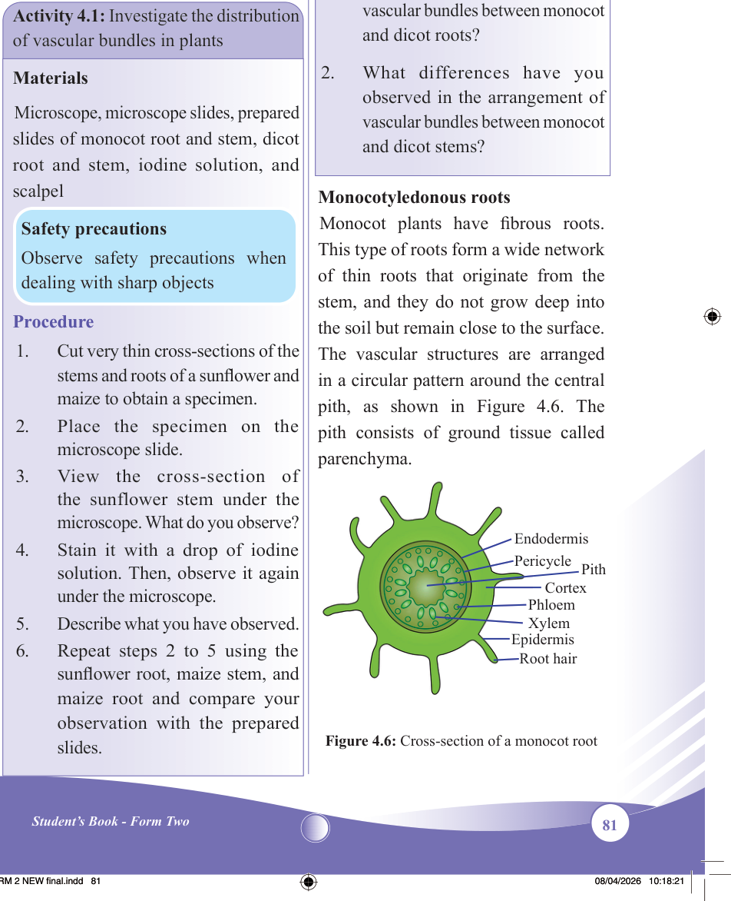

81
Student’s Book - Form Two

Biology for Secondary Schools
The distribution of vascular bundles in plants
The arrangement of vascular bundles in the roots, stems, and leaves of monocots and dicots differs in various aspects.
Activity 4.1: Investigate the distribution
of vascular bundles in plants
Materials
Microscope, microscope slides, prepared
slides of monocot root and stem, dicot
root and stem, iodine solution, and
scalpel
Safety precautions
Observe safety precautions when dealing with sharp objects
Procedure
1.
Cut very thin cross-sections of the
stems and roots of a sunflower and
maize to obtain a specimen.
2.
Place the specimen on the
microscope slide.
3.
View the cross-section of the sunflower stem under the
microscope. What do you observe?
4.
Stain it with a drop of iodine
solution. Then, observe it again
under the microscope.
5.
Describe what you have observed.
6.
Repeat steps 2 to 5 using the
sunflower root, maize stem, and
maize root and compare your observation with the prepared
slides.
7.
Compare the structure of monocot
and dicot stems and roots.
Questions
1.
What differences have you
observed in the arrangement of
vascular bundles between monocot
and dicot roots?
2.
What differences have you
observed in the arrangement of
vascular bundles between monocot
and dicot stems?
Monocotyledonous roots
Monocot plants have fibrous roots.
This type of roots form a wide network of thin roots that originate from the stem, and they do not grow deep into the soil but remain close to the surface.
The vascular structures are arranged in a circular pattern around the central pith, as shown in Figure 4.6. The pith consists of ground tissue called parenchyma.
Root hair
Endodermis
Pericycle
Epidermis
Cortex
Phloem
Xylem
Pith
Figure 4.6: Cross-section of a monocot root
08/04/2026 10:18:21